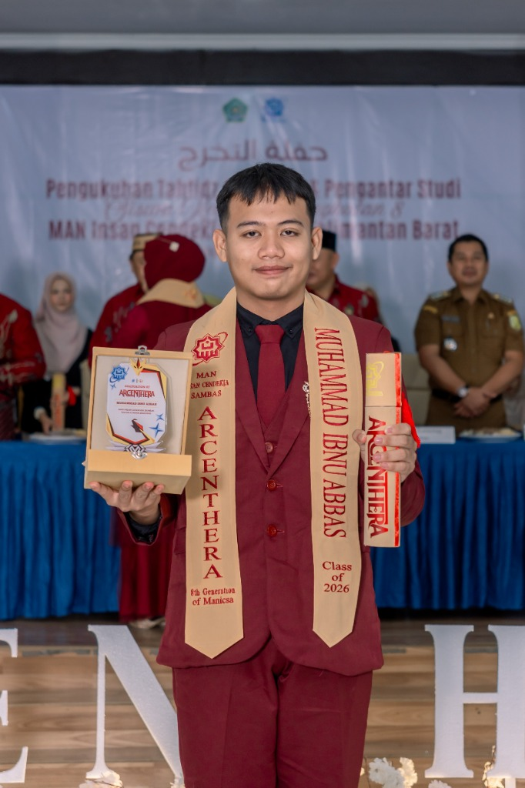
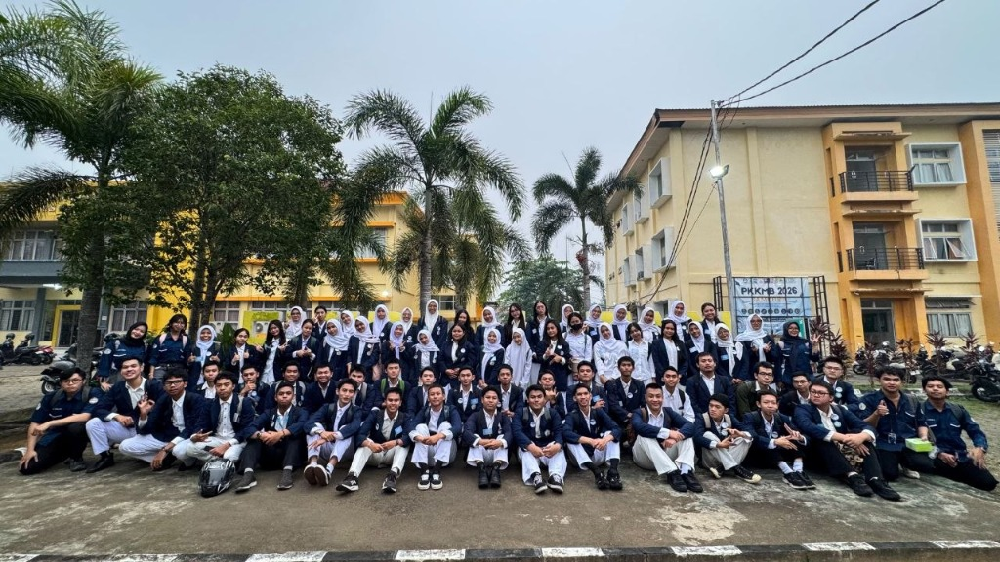

Hello!!

Perkenalkan, saya Muhammad Ibnu Abbas. Saat ini saya adalah seorang mahasiswa program studi Sistem Informasi di Universitas Tanjungpura (UNTAN).
Ketertarikan saya berpusat pada bagaimana mengolah informasi menjadi sebuah produk digital yang tidak hanya fungsional secara sistem, tetapi juga memiliki nilai estetika dan kemudahan interaksi bagi penggunanya.
SI
Major
UNTAN
University
∞
Curiosity
Why
Information
Systems?

Sistem Informasi adalah titik temu yang harmonis antara teknologi dan kebutuhan bisnis. Ini bukan sekadar tentang seberapa canggih baris kode yang ditulis, melainkan seberapa tepat solusi tersebut memecahkan masalah.
Melalui disiplin ilmu ini, saya belajar merancang arsitektur data, menganalisis alur kerja pengguna, dan meracik teknologi menjadi alat yang memberdayakan manusia di baliknya.
What I Use
Tech Stack & Tools
Perangkat dan teknologi yang menemani proses kreatif saya setiap harinya.
Programming
Languages & frameworks
- Python
- Lua
- CSS
- HTML
Design & 3D
Visual, prototype & modeling
- Figma
- Blender
- draw.io
AI
AI engineering & workflow
- AI Engineer
- AI Lokal
- AI Generatif
- AI Workflow
Portfolio
Selected
Projects
Beberapa karya dan studi kasus terpilih yang menunjukkan kemampuan saya.
UI/UX Evaluation Video

Proyek visual yang menggabungkan analisis antarmuka dengan kinetic typography. Membedah interaksi pengguna dan mengevaluasi journey flow untuk menemukan ruang perbaikan desain.
Programming

Pengembangan solusi pemrograman fungsional dan antarmuka interaktif menggunakan Python, Lua, CSS, dan HTML. Berfokus pada penulisan struktur kode yang teratur, modular, dan efisien.
AI

Implementasi dan eksplorasi solusi kecerdasan buatan, meliputi peran AI Engineer, penerapan model AI Lokal, pemanfaatan alat AI Generatif, hingga orkestrasi otomasi AI Workflow.
Experience
PARTISI 2026
Bagian dari Tim VIDYADHIPATI dan KITSUNE
Berpartisipasi aktif dalam kegiatan/kompetisi akademik, melatih kemampuan kolaborasi, pemecahan masalah secara tim, dan penerapan langsung materi Sistem Informasi dengan suasana yang interaktif.